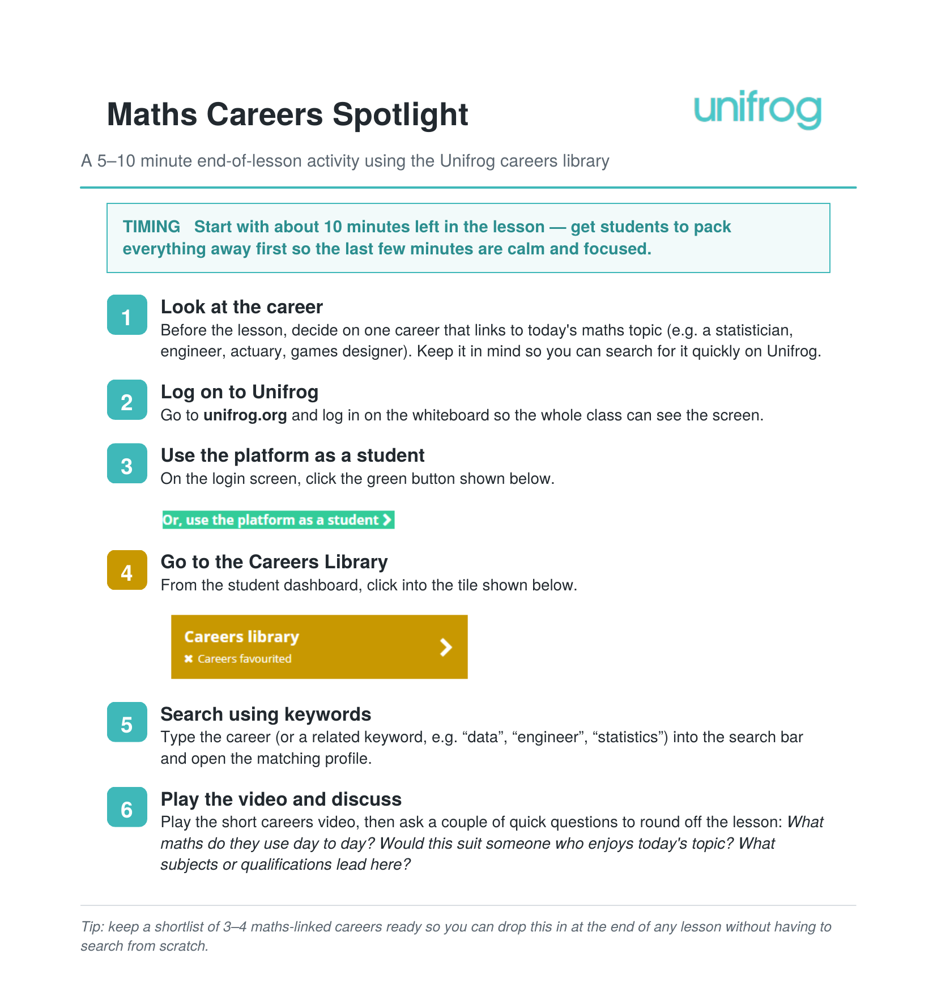

Cycle 1
Careers Linked to This Cycle
One career per year group, introduced in the week shown — sourced from Unifrog.
| Year | Career |
|---|---|
| 7 | Epidemiologist Week 7 |
| 8 | Vehicle Spray Painter Week 7 |
| 9 | Textile Designer Week 7 |
| 10 | Business Development Manager Week 7 |
| 11 | Travel Guide Week 7 |
Unifrog Maths Careers Guide
Full guide document, with a preview below so you can scan it without opening the file.
unifrog_maths_careers_guide.pdf ↗
Preview
